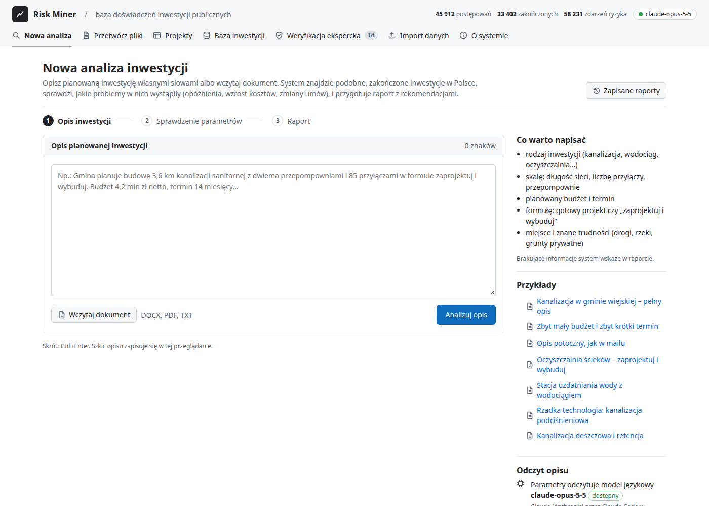
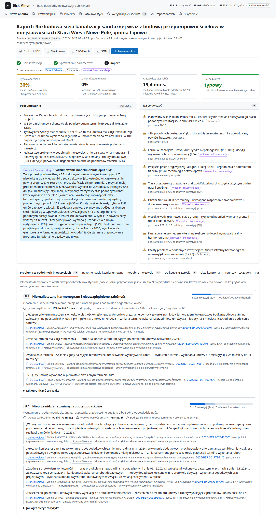
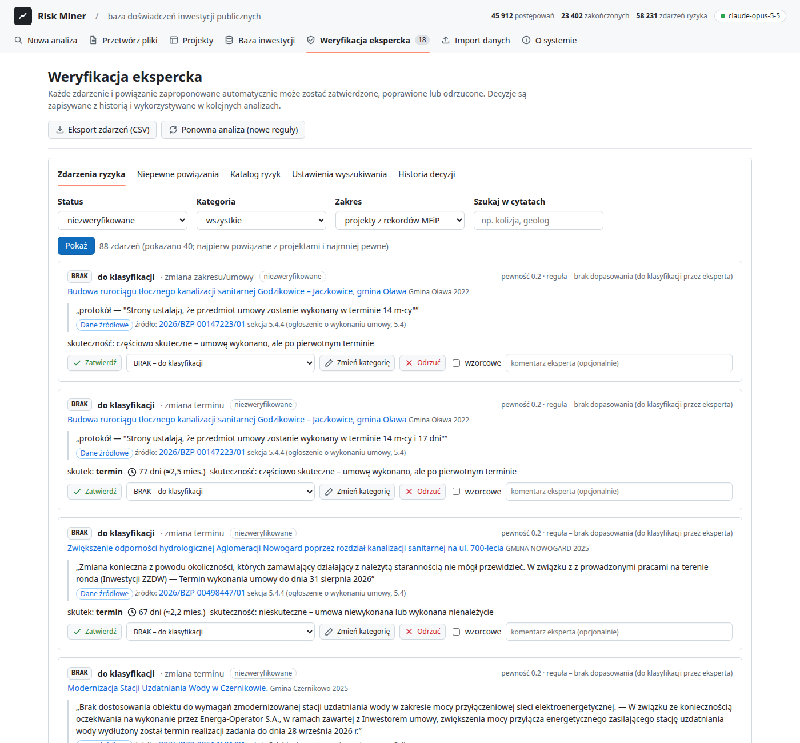

Cyfrowa pamięć instytucjonalna inwestycji publicznych
Opisz planowaną inwestycję zwykłym językiem – zobacz, co poszło nie tak w podobnych inwestycjach w całej Polsce,
ile naprawdę trwały i kosztowały, i jak tego uniknąć.
HackNation 2026 · wyzwanie Ministerstwa Funduszy i Polityki Regionalnej (Departament PPP)
1Opis inwestycji – wklejony tekst albo wstępne dokumenty (DOCX, PDF).
Sprawdzenie parametrów – podsektor, skala, budżet, termin, elementy techniczne; każdy z cytatem z opisu.
Raport – ryzyko opóźnienia, realny czas i koszt, ocena budżetu (zł/km), czerwone flagi, problemy z dowodami, rekomendacje, zapisy umowne, kontakty do gmin, które to robiły.

| Źródło | Co wnosi |
|---|---|
| BZP / e-Zamówienia 113 tys. ogłoszeń | 45 tys. postępowań, 39 tys. umów, 28,6 tys. zmian umów (art. 455: przyczyna, opis, wartość), wykonanie, unieważnienia |
| API BZP na żywo | brakujące ogłoszenia, monitoring trwających inwestycji |
| TED · KIO (SAOS) · NIK | zamówienia unijne, odwołania, kontrole |
| BIP gmin | robot szukający dokumentów inwestycji (umowy, aneksy, uchwały) |
| Pliki | XLSX/XLS/CSV, PDF, DOCX, DOC, ODT, HTML (+ OCR) |
python -m riskminer build, „Wzbogać ponownie”, „Ponowna analiza”.Raport z testu łączenia (pewne / niepewne / błędne): docs/raport_testu_laczenia.md

Dane źródłowe Obliczenia Wniosek – zawsze rozróżnione.

python -m riskminer build · python -m riskminer serve · test jury: python -m riskminer test-run --project P.xlsx --investment O.docx